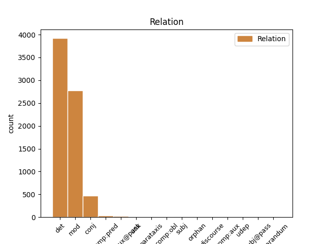
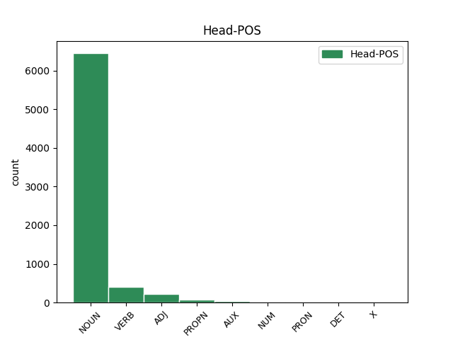
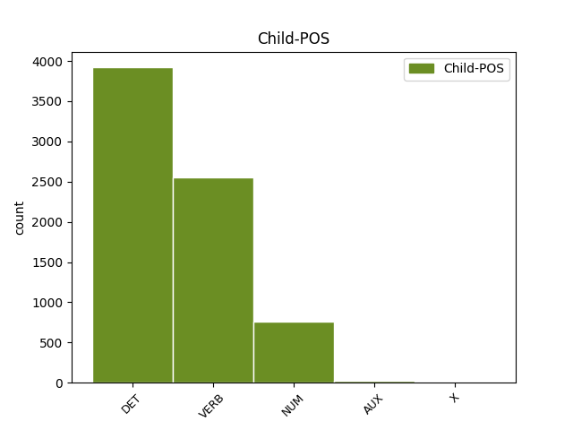

Distribution of features within this leaf



Agreement Rules sorted by frequency.
- When the dependent token is the determiner(det) of the head token, and the dependent token is DET.
1 Iespējams _ _ _ _ 0 _ _ _
2 , _ _ _ _ 0 _ _ _
3 ka _ _ _ _ 0 _ _ _
4 pazemība _ _ _ _ 0 _ _ _
5 senajā _ _ _ _ 0 _ _ _
6 Izraēlā _ _ _ _ 0 _ _ _
7 tika _ _ _ _ 0 _ _ _
8 pārņemta _ _ _ _ 0 _ _ _
9 kā _ _ _ _ 0 _ _ _
10 ierēdņu _ _ _ _ 0 _ _ _
11 tikums _ _ _ _ 0 _ _ _
12 no _ _ _ _ 0 _ _ _
13 apkārtējām _ _ _ _ 0 _ _ _
14 kultūrām _ _ _ _ 0 _ _ _
15 , _ _ _ _ 0 _ _ _
16 kas _ _ _ _ 0 _ _ _
17 tika _ _ _ _ 0 _ _ _
18 piemērota _ _ _ _ 0 _ _ _
19 Jahves _ _ _ _ 0 _ _ _
20 reliģijai _ _ _ _ 0 _ _ _
21 ( _ _ _ _ 0 _ _ _
22 Jahve _ _ _ _ 0 _ _ _
23 ienīst _ _ _ _ 0 _ _ _
24 visus viss DET pg0mpan Case=Acc|Gender=Masc|Number=Plur|PronType=Tot 25 det _ LvtbNodeId=a-z99-p160s2w24
25 augstprātīgos augstprātīgs ADJ afmpayp Case=Acc|Definite=Def|Degree=Pos|Gender=Masc|Number=Plur 0 _ _ _
26 un _ _ _ _ 0 _ _ _
27 lepnos _ _ _ _ 0 _ _ _
28 ) _ _ _ _ 0 _ _ _
29 . _ _ _ _ 0 _ _ _
1 Minētais minēt VERB vmnpdmsnpsypn Aspect=Perf|Case=Nom|Definite=Def|Degree=Pos|Gender=Masc|Number=Sing|Polarity=Pos|Tense=Past|VerbForm=Part|Voice=Pass 3 mod _ LvtbNodeId=a-z99-p67s4w1
2 bērnu _ _ _ _ 0 _ _ _
3 skaits skaits NOUN ncmsn1 Case=Nom|Gender=Masc|Number=Sing 0 _ _ _
4 parasti _ _ _ _ 0 _ _ _
5 svārstās _ _ _ _ 0 _ _ _
6 starp _ _ _ _ 0 _ _ _
7 2 _ _ _ _ 0 _ _ _
8 līdz _ _ _ _ 0 _ _ _
9 5 _ _ _ _ 0 _ _ _
10 . _ _ _ _ 0 _ _ _
1 Jāatzīmē _ _ _ _ 0 _ _ _
2 arī _ _ _ _ 0 _ _ _
3 , _ _ _ _ 0 _ _ _
4 ka _ _ _ _ 0 _ _ _
5 jauniešu _ _ _ _ 0 _ _ _
6 nosūtīšana _ _ _ _ 0 _ _ _
7 lauku _ _ _ _ 0 _ _ _
8 darbos _ _ _ _ 0 _ _ _
9 nebija _ _ _ _ 0 _ _ _
10 izolējošs _ _ _ _ 0 _ _ _
11 pasākums _ _ _ _ 0 _ _ _
12 , _ _ _ _ 0 _ _ _
13 kas _ _ _ _ 0 _ _ _
14 uz _ _ _ _ 0 _ _ _
15 trīs trīs NUM mcsmpd Case=Dat|Gender=Masc|Number=Plur|NumType=Card 16 mod _ LvtbNodeId=a-z90-p175s3w15
16 mēnešiem mēnesis NOUN ncmpd2 Case=Dat|Gender=Masc|Number=Plur 0 _ _ _
17 izrauj _ _ _ _ 0 _ _ _
18 to _ _ _ _ 0 _ _ _
19 no _ _ _ _ 0 _ _ _
20 sabiedrības _ _ _ _ 0 _ _ _
21 . _ _ _ _ 0 _ _ _
1 Lai _ _ _ _ 0 _ _ _
2 labāk _ _ _ _ 0 _ _ _
3 ilustrētu _ _ _ _ 0 _ _ _
4 iegūto _ _ _ _ 0 _ _ _
5 skaitļu _ _ _ _ 0 _ _ _
6 nozīmi _ _ _ _ 0 _ _ _
7 , _ _ _ _ 0 _ _ _
8 tie _ _ _ _ 0 _ _ _
9 ir _ _ _ _ 0 _ _ _
10 jāpaskaidro _ _ _ _ 0 _ _ _
11 reālos reāls ADJ armpayp Case=Acc|Definite=Def|Degree=Pos|Gender=Masc|Number=Plur 0 _ _ _
12 un _ _ _ _ 0 _ _ _
13 ar _ _ _ _ 0 _ _ _
14 pētāmo _ _ _ _ 0 _ _ _
15 jautājumu _ _ _ _ 0 _ _ _
16 saistītos saistīt VERB vmnpdmpapsypn Aspect=Perf|Case=Acc|Definite=Def|Degree=Pos|Gender=Masc|Number=Plur|Polarity=Pos|Tense=Past|VerbForm=Part|Voice=Pass 11 conj _ LvtbNodeId=a-z90-p219s1w16
17 lielumos _ _ _ _ 0 _ _ _
18 . _ _ _ _ 0 _ _ _
1 Ļeoņidiks _ _ _ _ 0 _ _ _
2 , _ _ _ _ 0 _ _ _
3 nervozi _ _ _ _ 0 _ _ _
4 smaidīdams smaidīt VERB vmnppmsn0000n Case=Nom|Gender=Masc|Number=Sing|Polarity=Pos|VerbForm=Conv 5 comp:pred _ LvtbNodeId=a-z83-p189s5w4
5 atvadījies atvadīties VERB vmypdmsnasnpn Aspect=Perf|Case=Nom|Definite=Ind|Degree=Pos|Gender=Masc|Number=Sing|Polarity=Pos|Reflex=Yes|Tense=Past|VerbForm=Part|Voice=Act 0 _ _ _
6 , _ _ _ _ 0 _ _ _
7 iziet _ _ _ _ 0 _ _ _
8 pa _ _ _ _ 0 _ _ _
9 durvīm _ _ _ _ 0 _ _ _
10 uz _ _ _ _ 0 _ _ _
11 neatgriešanos _ _ _ _ 0 _ _ _
12 , _ _ _ _ 0 _ _ _
13 dzīvoklī _ _ _ _ 0 _ _ _
14 kopā _ _ _ _ 0 _ _ _
15 paliek _ _ _ _ 0 _ _ _
16 Ļika _ _ _ _ 0 _ _ _
17 un _ _ _ _ 0 _ _ _
18 Marats _ _ _ _ 0 _ _ _
19 – _ _ _ _ 0 _ _ _
20 jaunas _ _ _ _ 0 _ _ _
21 dzīves _ _ _ _ 0 _ _ _
22 sākumā _ _ _ _ 0 _ _ _
23 . _ _ _ _ 0 _ _ _
1 Jaunais _ _ _ _ 0 _ _ _
2 Rīgas _ _ _ _ 0 _ _ _
3 teātris _ _ _ _ 0 _ _ _
4 ārzemēs _ _ _ _ 0 _ _ _
5 nereti _ _ _ _ 0 _ _ _
6 ticis tikt AUX vtnpdmsnasnpn Aspect=Perf|Case=Nom|Definite=Ind|Degree=Pos|Gender=Masc|Number=Sing|Polarity=Pos|Tense=Past|VerbForm=Part|Voice=Act 0 _ _ _
7 uztverts uztvert VERB vmnpdmsnpsnpn Aspect=Perf|Case=Nom|Definite=Ind|Degree=Pos|Gender=Masc|Number=Sing|Polarity=Pos|Tense=Past|VerbForm=Part|Voice=Pass 6 comp:aux@pass _ LvtbNodeId=a-z83-p16s1w7
8 kā _ _ _ _ 0 _ _ _
9 viena _ _ _ _ 0 _ _ _
10 režisora _ _ _ _ 0 _ _ _
11 autorteātris _ _ _ _ 0 _ _ _
12 , _ _ _ _ 0 _ _ _
13 kļūdaini _ _ _ _ 0 _ _ _
14 uzsverot _ _ _ _ 0 _ _ _
15 , _ _ _ _ 0 _ _ _
16 ka _ _ _ _ 0 _ _ _
17 to _ _ _ _ 0 _ _ _
18 1997. _ _ _ _ 0 _ _ _
19 gadā _ _ _ _ 0 _ _ _
20 dibinājis _ _ _ _ 0 _ _ _
21 Alvis _ _ _ _ 0 _ _ _
22 Hermanis _ _ _ _ 0 _ _ _
23 . _ _ _ _ 0 _ _ _
1 Līdz _ _ _ _ 0 _ _ _
2 2012. _ _ _ _ 0 _ _ _
3 gada _ _ _ _ 0 _ _ _
4 nogalei _ _ _ _ 0 _ _ _
5 A. _ _ _ _ 0 _ _ _
6 Hermanis _ _ _ _ 0 _ _ _
7 iestudējis _ _ _ _ 0 _ _ _
8 piecdesmit _ _ _ _ 0 _ _ _
9 deviņas _ _ _ _ 0 _ _ _
10 izrādes _ _ _ _ 0 _ _ _
11 – _ _ _ _ 0 _ _ _
12 no _ _ _ _ 0 _ _ _
13 tām _ _ _ _ 0 _ _ _
14 deviņas _ _ _ _ 0 _ _ _
15 tapušas _ _ _ _ 0 _ _ _
16 Vācijā _ _ _ _ 0 _ _ _
17 , _ _ _ _ 0 _ _ _
18 četras četri NUM mcsfpn Case=Nom|Gender=Fem|Number=Plur|NumType=Card 0 _ _ _
19 Austrijā _ _ _ _ 0 _ _ _
20 , _ _ _ _ 0 _ _ _
21 trīs trīs NUM mcsmpn Case=Nom|Gender=Masc|Number=Plur|NumType=Card 18 conj _ LvtbNodeId=a-z83-p3s1w21
22 Šveicē _ _ _ _ 0 _ _ _
23 , _ _ _ _ 0 _ _ _
24 divas _ _ _ _ 0 _ _ _
25 Igaunijā _ _ _ _ 0 _ _ _
26 , _ _ _ _ 0 _ _ _
27 pa _ _ _ _ 0 _ _ _
28 vienai _ _ _ _ 0 _ _ _
29 – _ _ _ _ 0 _ _ _
30 Itālijā _ _ _ _ 0 _ _ _
31 un _ _ _ _ 0 _ _ _
32 Krievijā _ _ _ _ 0 _ _ _
33 . _ _ _ _ 0 _ _ _
1 Programmas _ _ _ _ 0 _ _ _
2 režisors _ _ _ _ 0 _ _ _
3 Sergejs _ _ _ _ 0 _ _ _
4 Širokovs _ _ _ _ 0 _ _ _
5 paziņojis _ _ _ _ 0 _ _ _
6 , _ _ _ _ 0 _ _ _
7 ka _ _ _ _ 0 _ _ _
8 « _ _ _ _ 0 _ _ _
9 apstākļi _ _ _ _ 0 _ _ _
10 ir _ _ _ _ 0 _ _ _
11 izmainījušies izmainīties VERB vmypdmpnasnpn Aspect=Perf|Case=Nom|Definite=Ind|Degree=Pos|Gender=Masc|Number=Plur|Polarity=Pos|Reflex=Yes|Tense=Past|VerbForm=Part|Voice=Act 0 _ _ _
12 » _ _ _ _ 0 _ _ _
13 , _ _ _ _ 0 _ _ _
14 tāpēc _ _ _ _ 0 _ _ _
15 joki _ _ _ _ 0 _ _ _
16 kļuvuši kļūt AUX vtnpdmpnasnpn Aspect=Perf|Case=Nom|Definite=Ind|Degree=Pos|Gender=Masc|Number=Plur|Polarity=Pos|Tense=Past|VerbForm=Part|Voice=Act 11 conj _ LvtbNodeId=a-p7885-p4s1w16
17 asāki _ _ _ _ 0 _ _ _
18 . _ _ _ _ 0 _ _ _
1 Intervijas _ _ _ _ 0 _ _ _
2 tika _ _ _ _ 0 _ _ _
3 veiktas _ _ _ _ 0 _ _ _
4 bijušajos būt AUX vcnpdmplasypn Aspect=Perf|Case=Loc|Definite=Def|Degree=Pos|Gender=Masc|Number=Plur|Polarity=Pos|Tense=Past|VerbForm=Part|Voice=Act 41 mod _ LvtbNodeId=a-z89-p27s1w4
5 ( _ _ _ _ 0 _ _ _
6 līdz _ _ _ _ 0 _ _ _
7 2010. _ _ _ _ 0 _ _ _
8 gadam _ _ _ _ 0 _ _ _
9 ) _ _ _ _ 0 _ _ _
10 Alūksnes _ _ _ _ 0 _ _ _
11 , _ _ _ _ 0 _ _ _
12 Balvu _ _ _ _ 0 _ _ _
13 , _ _ _ _ 0 _ _ _
14 Bauskas _ _ _ _ 0 _ _ _
15 , _ _ _ _ 0 _ _ _
16 Cēsu _ _ _ _ 0 _ _ _
17 , _ _ _ _ 0 _ _ _
18 Daugavpils _ _ _ _ 0 _ _ _
19 , _ _ _ _ 0 _ _ _
20 Jēkabpils _ _ _ _ 0 _ _ _
21 , _ _ _ _ 0 _ _ _
22 Krāslava _ _ _ _ 0 _ _ _
23 , _ _ _ _ 0 _ _ _
24 Limbaņu _ _ _ _ 0 _ _ _
25 , _ _ _ _ 0 _ _ _
26 Ludzas _ _ _ _ 0 _ _ _
27 , _ _ _ _ 0 _ _ _
28 Madonas _ _ _ _ 0 _ _ _
29 , _ _ _ _ 0 _ _ _
30 Rīgas _ _ _ _ 0 _ _ _
31 , _ _ _ _ 0 _ _ _
32 Saldus _ _ _ _ 0 _ _ _
33 , _ _ _ _ 0 _ _ _
34 Talsu _ _ _ _ 0 _ _ _
35 , _ _ _ _ 0 _ _ _
36 Valmieras _ _ _ _ 0 _ _ _
37 , _ _ _ _ 0 _ _ _
38 Valkas _ _ _ _ 0 _ _ _
39 , _ _ _ _ 0 _ _ _
40 Ventspils _ _ _ _ 0 _ _ _
41 rajonos rajons NOUN ncmpl1 Case=Loc|Gender=Masc|Number=Plur 0 _ _ _
42 . _ _ _ _ 0 _ _ _
1 Etnisko _ _ _ _ 0 _ _ _
2 minoritāšu _ _ _ _ 0 _ _ _
3 kustības _ _ _ _ 0 _ _ _
4 parasti _ _ _ _ 0 _ _ _
5 skata _ _ _ _ 0 _ _ _
6 etnisko _ _ _ _ 0 _ _ _
7 konfliktu _ _ _ _ 0 _ _ _
8 kontekstā _ _ _ _ 0 _ _ _
9 kā _ _ _ _ 0 _ _ _
10 etnisko _ _ _ _ 0 _ _ _
11 mobilizāciju mobilizācija NOUN ncfsa4 Case=Acc|Gender=Fem|Number=Sing 0 _ _ _
12 - _ _ _ _ 0 _ _ _
13 vienu viens NUM mcsfsa Case=Acc|Gender=Fem|Number=Sing|NumType=Card 11 unk _ LvtbNodeId=a-z106-p86s1w13
14 no _ _ _ _ 0 _ _ _
15 etniskā _ _ _ _ 0 _ _ _
16 konflikta _ _ _ _ 0 _ _ _
17 fāzēm _ _ _ _ 0 _ _ _
18 . _ _ _ _ 0 _ _ _
1 Līdz _ _ _ _ 0 _ _ _
2 2012. _ _ _ _ 0 _ _ _
3 gada _ _ _ _ 0 _ _ _
4 nogalei _ _ _ _ 0 _ _ _
5 A. _ _ _ _ 0 _ _ _
6 Hermanis _ _ _ _ 0 _ _ _
7 iestudējis _ _ _ _ 0 _ _ _
8 piecdesmit _ _ _ _ 0 _ _ _
9 deviņas _ _ _ _ 0 _ _ _
10 izrādes _ _ _ _ 0 _ _ _
11 – _ _ _ _ 0 _ _ _
12 no _ _ _ _ 0 _ _ _
13 tām _ _ _ _ 0 _ _ _
14 deviņas deviņi NUM mcsfpn Case=Nom|Gender=Fem|Number=Plur|NumType=Card 15 subj _ LvtbNodeId=a-z83-p3s1w14
15 tapušas tapt VERB vmnpdfpnasnpn Aspect=Perf|Case=Nom|Definite=Ind|Degree=Pos|Gender=Fem|Number=Plur|Polarity=Pos|Tense=Past|VerbForm=Part|Voice=Act 0 _ _ _
16 Vācijā _ _ _ _ 0 _ _ _
17 , _ _ _ _ 0 _ _ _
18 četras _ _ _ _ 0 _ _ _
19 Austrijā _ _ _ _ 0 _ _ _
20 , _ _ _ _ 0 _ _ _
21 trīs _ _ _ _ 0 _ _ _
22 Šveicē _ _ _ _ 0 _ _ _
23 , _ _ _ _ 0 _ _ _
24 divas _ _ _ _ 0 _ _ _
25 Igaunijā _ _ _ _ 0 _ _ _
26 , _ _ _ _ 0 _ _ _
27 pa _ _ _ _ 0 _ _ _
28 vienai _ _ _ _ 0 _ _ _
29 – _ _ _ _ 0 _ _ _
30 Itālijā _ _ _ _ 0 _ _ _
31 un _ _ _ _ 0 _ _ _
32 Krievijā _ _ _ _ 0 _ _ _
33 . _ _ _ _ 0 _ _ _
1 Prognozējot _ _ _ _ 0 _ _ _
2 čigāna _ _ _ _ 0 _ _ _
3 darbības _ _ _ _ 0 _ _ _
4 , _ _ _ _ 0 _ _ _
5 respondentiem _ _ _ _ 0 _ _ _
6 ieteikts ieteikt VERB vmnpdmsnpsnpn Aspect=Perf|Case=Nom|Definite=Ind|Degree=Pos|Gender=Masc|Number=Sing|Polarity=Pos|Tense=Past|VerbForm=Part|Voice=Pass 0 _ _ _
7 ( _ _ _ _ 0 _ _ _
8 vecāku _ _ _ _ 0 _ _ _
9 , _ _ _ _ 0 _ _ _
10 vecvecāku _ _ _ _ 0 _ _ _
11 iemācīts iemācīt VERB vmnpdmsnpsnpn Aspect=Perf|Case=Nom|Definite=Ind|Degree=Pos|Gender=Masc|Number=Sing|Polarity=Pos|Tense=Past|VerbForm=Part|Voice=Pass 6 parataxis _ LvtbNodeId=a-z89-p125s2w11|SpaceAfter=No
12 ) _ _ _ _ 0 _ _ _
13 uzvedības _ _ _ _ 0 _ _ _
14 modelis _ _ _ _ 0 _ _ _
15 : _ _ _ _ 0 _ _ _
16 neskatīties _ _ _ _ 0 _ _ _
17 viņiem _ _ _ _ 0 _ _ _
18 acīs _ _ _ _ 0 _ _ _
19 , _ _ _ _ 0 _ _ _
20 neuzticēties _ _ _ _ 0 _ _ _
21 un _ _ _ _ 0 _ _ _
22 neielaisties _ _ _ _ 0 _ _ _
23 nekādās _ _ _ _ 0 _ _ _
24 darīšanās _ _ _ _ 0 _ _ _
25 ar _ _ _ _ 0 _ _ _
26 šīs _ _ _ _ 0 _ _ _
27 etniskās _ _ _ _ 0 _ _ _
28 grupas _ _ _ _ 0 _ _ _
29 pārstāvjiem _ _ _ _ 0 _ _ _
30 . _ _ _ _ 0 _ _ _
1 “ _ _ _ _ 0 _ _ _
2 Piemēram _ _ _ _ 0 _ _ _
3 , _ _ _ _ 0 _ _ _
4 šī _ _ _ _ 0 _ _ _
5 gada _ _ _ _ 0 _ _ _
6 augusts _ _ _ _ 0 _ _ _
7 ir _ _ _ _ 0 _ _ _
8 bijis būt AUX vcnpdmsnasnpn Aspect=Perf|Case=Nom|Definite=Ind|Degree=Pos|Gender=Masc|Number=Sing|Polarity=Pos|Tense=Past|VerbForm=Part|Voice=Act 0 _ _ _
9 viens viens NUM mcsmsn Case=Nom|Gender=Masc|Number=Sing|NumType=Card 8 comp:pred _ LvtbNodeId=a-p8040-p7s1w9
10 no _ _ _ _ 0 _ _ _
11 traģiskākajiem _ _ _ _ 0 _ _ _
12 mēnešiem _ _ _ _ 0 _ _ _
13 šogad _ _ _ _ 0 _ _ _
14 – _ _ _ _ 0 _ _ _
15 satiksmes _ _ _ _ 0 _ _ _
16 negadījumos _ _ _ _ 0 _ _ _
17 bojā _ _ _ _ 0 _ _ _
18 gājuši _ _ _ _ 0 _ _ _
19 29 _ _ _ _ 0 _ _ _
20 cilvēki _ _ _ _ 0 _ _ _
21 , _ _ _ _ 0 _ _ _
22 ievainoti _ _ _ _ 0 _ _ _
23 - _ _ _ _ 0 _ _ _
24 585 _ _ _ _ 0 _ _ _
25 , _ _ _ _ 0 _ _ _
26 starp _ _ _ _ 0 _ _ _
27 tiem _ _ _ _ 0 _ _ _
28 ir _ _ _ _ 0 _ _ _
29 arī _ _ _ _ 0 _ _ _
30 šova _ _ _ _ 0 _ _ _
31 dalībniece _ _ _ _ 0 _ _ _
32 , _ _ _ _ 0 _ _ _
33 kurai _ _ _ _ 0 _ _ _
34 uzbraukts _ _ _ _ 0 _ _ _
35 uz _ _ _ _ 0 _ _ _
36 kājas _ _ _ _ 0 _ _ _
37 , _ _ _ _ 0 _ _ _
38 ” _ _ _ _ 0 _ _ _
39 piezīmē _ _ _ _ 0 _ _ _
40 policija _ _ _ _ 0 _ _ _
41 . _ _ _ _ 0 _ _ _
1 Boriss Boriss PROPN npmsn1 Case=Nom|Gender=Masc|Number=Sing 0 _ _ _
2 Cilevičs _ _ _ _ 0 _ _ _
3 ( _ _ _ _ 0 _ _ _
4 viens viens NUM mcsmsn Case=Nom|Gender=Masc|Number=Sing|NumType=Card 1 parataxis _ LvtbNodeId=a-z106-p210s3w4
5 no _ _ _ _ 0 _ _ _
6 Apatrīdu _ _ _ _ 0 _ _ _
7 līgas _ _ _ _ 0 _ _ _
8 iniciatoriem _ _ _ _ 0 _ _ _
9 un _ _ _ _ 0 _ _ _
10 līdzdzpriekšsēdētājiem _ _ _ _ 0 _ _ _
11 ) _ _ _ _ 0 _ _ _
12 , _ _ _ _ 0 _ _ _
13 Jakovs _ _ _ _ 0 _ _ _
14 Pliners _ _ _ _ 0 _ _ _
15 un _ _ _ _ 0 _ _ _
16 Vladimirs _ _ _ _ 0 _ _ _
17 Buzajevs _ _ _ _ 0 _ _ _
18 ( _ _ _ _ 0 _ _ _
19 Cilvektiesību _ _ _ _ 0 _ _ _
20 komiteja _ _ _ _ 0 _ _ _
21 ) _ _ _ _ 0 _ _ _
22 bija _ _ _ _ 0 _ _ _
23 arī _ _ _ _ 0 _ _ _
24 vieni _ _ _ _ 0 _ _ _
25 no _ _ _ _ 0 _ _ _
26 akcijas _ _ _ _ 0 _ _ _
27 pret _ _ _ _ 0 _ _ _
28 pilsonības _ _ _ _ 0 _ _ _
29 politiku _ _ _ _ 0 _ _ _
30 iniciatoriem _ _ _ _ 0 _ _ _
31 un _ _ _ _ 0 _ _ _
32 organizatoriem _ _ _ _ 0 _ _ _
33 . _ _ _ _ 0 _ _ _
1 Veterinārajās _ _ _ _ 0 _ _ _
2 aptiekās _ _ _ _ 0 _ _ _
3 pieejami pieiet VERB vmnpdmpnppnpn Case=Nom|Definite=Ind|Degree=Pos|Gender=Masc|Number=Plur|Polarity=Pos|Tense=Pres|VerbForm=Part|Voice=Pass 0 _ _ _
4 vairāku _ _ _ _ 0 _ _ _
5 veidu _ _ _ _ 0 _ _ _
6 ērču _ _ _ _ 0 _ _ _
7 izvelkamie izvilkt VERB vmnpdmpnppypn Case=Nom|Definite=Def|Degree=Pos|Gender=Masc|Number=Plur|Polarity=Pos|Tense=Pres|VerbForm=Part|Voice=Pass 3 subj _ LvtbNodeId=a-p13260-p2s2w7|SpaceAfter=No
8 . _ _ _ _ 0 _ _ _
1 Centrālās _ _ _ _ 0 _ _ _
2 vēlēšanu _ _ _ _ 0 _ _ _
3 komisijas _ _ _ _ 0 _ _ _
4 priekšsēdētājs _ _ _ _ 0 _ _ _
5 Arnis _ _ _ _ 0 _ _ _
6 Cimdars _ _ _ _ 0 _ _ _
7 informēja _ _ _ _ 0 _ _ _
8 komisiju _ _ _ _ 0 _ _ _
9 , _ _ _ _ 0 _ _ _
10 ka _ _ _ _ 0 _ _ _
11 vēlēšanas _ _ _ _ 0 _ _ _
12 bijušas būt AUX vcnpdfpnasnpn Aspect=Perf|Case=Nom|Definite=Ind|Degree=Pos|Gender=Fem|Number=Plur|Polarity=Pos|Tense=Past|VerbForm=Part|Voice=Act 0 _ _ _
13 atklātas atklāt VERB vmnpdfpnpsnpn Aspect=Perf|Case=Nom|Definite=Ind|Degree=Pos|Gender=Fem|Number=Plur|Polarity=Pos|Tense=Past|VerbForm=Part|Voice=Pass 12 comp:aux _ LvtbNodeId=a-s63-p3s3w13
14 un _ _ _ _ 0 _ _ _
15 profesionāli _ _ _ _ 0 _ _ _
16 organizētas _ _ _ _ 0 _ _ _
17 . _ _ _ _ 0 _ _ _
1 Protams prast VERB vmnpdmsnppnpn Case=Nom|Definite=Ind|Degree=Pos|Gender=Masc|Number=Sing|Polarity=Pos|Tense=Pres|VerbForm=Part|Voice=Pass 5 discourse _ LvtbNodeId=a-d200-p36s4w1|SpaceAfter=No
2 , _ _ _ _ 0 _ _ _
3 visiem _ _ _ _ 0 _ _ _
4 cilvēkiem _ _ _ _ 0 _ _ _
5 nepieciešams nepieciešams ADJ afmsnnp Case=Nom|Definite=Ind|Degree=Pos|Gender=Masc|Number=Sing 0 _ _ _
6 ēdiens _ _ _ _ 0 _ _ _
7 , _ _ _ _ 0 _ _ _
8 pārtika _ _ _ _ 0 _ _ _
9 . _ _ _ _ 0 _ _ _
1 Lai _ _ _ _ 0 _ _ _
2 arī _ _ _ _ 0 _ _ _
3 cik _ _ _ _ 0 _ _ _
4 grūti _ _ _ _ 0 _ _ _
5 ir _ _ _ _ 0 _ _ _
6 atbildēt _ _ _ _ 0 _ _ _
7 uz _ _ _ _ 0 _ _ _
8 kādu _ _ _ _ 0 _ _ _
9 jautājumu _ _ _ _ 0 _ _ _
10 , _ _ _ _ 0 _ _ _
11 var _ _ _ _ 0 _ _ _
12 pieņemt _ _ _ _ 0 _ _ _
13 , _ _ _ _ 0 _ _ _
14 ka _ _ _ _ 0 _ _ _
15 šim _ _ _ _ 0 _ _ _
16 jautājumam _ _ _ _ 0 _ _ _
17 ir _ _ _ _ 0 _ _ _
18 viena viens NUM mcsfsn Case=Nom|Gender=Fem|Number=Sing|NumType=Card 0 _ _ _
19 — _ _ _ _ 0 _ _ _
20 un _ _ _ _ 0 _ _ _
21 tikai _ _ _ _ 0 _ _ _
22 viena viens NUM mcsfsn Case=Nom|Gender=Fem|Number=Sing|NumType=Card 18 discourse _ LvtbNodeId=a-d200-p51s1w22
23 — _ _ _ _ 0 _ _ _
24 pareiza _ _ _ _ 0 _ _ _
25 atbilde _ _ _ _ 0 _ _ _
26 . _ _ _ _ 0 _ _ _
1 Mani _ _ _ _ 0 _ _ _
2 atturēja _ _ _ _ 0 _ _ _
3 vienīgi _ _ _ _ 0 _ _ _
4 fakts _ _ _ _ 0 _ _ _
5 , _ _ _ _ 0 _ _ _
6 ka _ _ _ _ 0 _ _ _
7 pats _ _ _ _ 0 _ _ _
8 Merilins _ _ _ _ 0 _ _ _
9 Mensons _ _ _ _ 0 _ _ _
10 vēl _ _ _ _ 0 _ _ _
11 joprojām _ _ _ _ 0 _ _ _
12 dzīvo _ _ _ _ 0 _ _ _
13 , _ _ _ _ 0 _ _ _
14 cepuri _ _ _ _ 0 _ _ _
15 kuldams _ _ _ _ 0 _ _ _
16 , _ _ _ _ 0 _ _ _
17 un _ _ _ _ 0 _ _ _
18 i _ _ _ _ 0 _ _ _
19 nedomā _ _ _ _ 0 _ _ _
20 par _ _ _ _ 0 _ _ _
21 to _ _ _ _ 0 _ _ _
22 , _ _ _ _ 0 _ _ _
23 cik _ _ _ _ 0 _ _ _
24 mana _ _ _ _ 0 _ _ _
25 gadagājuma _ _ _ _ 0 _ _ _
26 cilvēku _ _ _ _ 0 _ _ _
27 ( _ _ _ _ 0 _ _ _
28 būdami būt AUX vcnppmpn0000n Case=Nom|Gender=Masc|Number=Plur|Polarity=Pos|VerbForm=Conv 35 parataxis _ LvtbNodeId=a-d27-p23s3w28
29 jauni _ _ _ _ 0 _ _ _
30 vai _ _ _ _ 0 _ _ _
31 veci _ _ _ _ 0 _ _ _
32 ) _ _ _ _ 0 _ _ _
33 viņa _ _ _ _ 0 _ _ _
34 dēļ _ _ _ _ 0 _ _ _
35 izdarījuši izdarīt VERB vmnpdmpnasnpn Aspect=Perf|Case=Nom|Definite=Ind|Degree=Pos|Gender=Masc|Number=Plur|Polarity=Pos|Tense=Past|VerbForm=Part|Voice=Act 0 _ _ _
36 pašnāvību _ _ _ _ 0 _ _ _
37 , _ _ _ _ 0 _ _ _
38 nē _ _ _ _ 0 _ _ _
39 , _ _ _ _ 0 _ _ _
40 kur _ _ _ _ 0 _ _ _
41 nu _ _ _ _ 0 _ _ _
42 , _ _ _ _ 0 _ _ _
43 Merilinam _ _ _ _ 0 _ _ _
44 Mensonam _ _ _ _ 0 _ _ _
45 ir _ _ _ _ 0 _ _ _
46 jau _ _ _ _ 0 _ _ _
47 kāds _ _ _ _ 0 _ _ _
48 piektais _ _ _ _ 0 _ _ _
49 ķermenis _ _ _ _ 0 _ _ _
50 , _ _ _ _ 0 _ _ _
51 bail _ _ _ _ 0 _ _ _
52 pat _ _ _ _ 0 _ _ _
53 skatīties _ _ _ _ 0 _ _ _
54 , _ _ _ _ 0 _ _ _
55 kas _ _ _ _ 0 _ _ _
56 ar _ _ _ _ 0 _ _ _
57 to _ _ _ _ 0 _ _ _
58 ir _ _ _ _ 0 _ _ _
59 noticis _ _ _ _ 0 _ _ _
60 pēc _ _ _ _ 0 _ _ _
61 vairākām _ _ _ _ 0 _ _ _
62 " _ _ _ _ 0 _ _ _
63 kosmētiskajām _ _ _ _ 0 _ _ _
64 " _ _ _ _ 0 _ _ _
65 operācijām _ _ _ _ 0 _ _ _
66 ( _ _ _ _ 0 _ _ _
67 ko _ _ _ _ 0 _ _ _
68 es _ _ _ _ 0 _ _ _
69 gan _ _ _ _ 0 _ _ _
70 sauktu _ _ _ _ 0 _ _ _
71 par _ _ _ _ 0 _ _ _
72 kapitālajiem _ _ _ _ 0 _ _ _
73 remontiem _ _ _ _ 0 _ _ _
74 ) _ _ _ _ 0 _ _ _
75 . _ _ _ _ 0 _ _ _
1 Ķeizaram _ _ _ _ 0 _ _ _
2 apkārt _ _ _ _ 0 _ _ _
3 bija _ _ _ _ 0 _ _ _
4 nosvērta _ _ _ _ 0 _ _ _
5 un _ _ _ _ 0 _ _ _
6 mierīga _ _ _ _ 0 _ _ _
7 aura _ _ _ _ 0 _ _ _
8 , _ _ _ _ 0 _ _ _
9 pret _ _ _ _ 0 _ _ _
10 kuru _ _ _ _ 0 _ _ _
11 droši _ _ _ _ 0 _ _ _
12 vien _ _ _ _ 0 _ _ _
13 bija _ _ _ _ 0 _ _ _
14 smalkās _ _ _ _ 0 _ _ _
15 drumstalās _ _ _ _ 0 _ _ _
16 saplīsusi _ _ _ _ 0 _ _ _
17 ne _ _ _ _ 0 _ _ _
18 viena viens NUM mcsfsn Case=Nom|Gender=Fem|Number=Sing|NumType=Card 22 comp:obl _ LvtbNodeId=a-d28-p118s3w18
19 vien _ _ _ _ 0 _ _ _
20 nervoza _ _ _ _ 0 _ _ _
21 stikla _ _ _ _ 0 _ _ _
22 bumbiņa bumbiņa NOUN ncfsn4 Case=Nom|Gender=Fem|Number=Sing 0 _ _ _
23 . _ _ _ _ 0 _ _ _
1 1. _ _ _ _ 0 _ _ _
2 Dalībvalstīm _ _ _ _ 0 _ _ _
3 ir _ _ _ _ 0 _ _ _
4 tiesības _ _ _ _ 0 _ _ _
5 ierobežot _ _ _ _ 0 _ _ _
6 3. _ _ _ _ 0 _ _ _
7 pantā _ _ _ _ 0 _ _ _
8 minēto minēt VERB vmnpdfpgpsypn Aspect=Perf|Case=Gen|Definite=Def|Degree=Pos|Gender=Fem|Number=Plur|Polarity=Pos|Tense=Past|VerbForm=Part|Voice=Pass 10 udep _ LvtbNodeId=a-n136-p55s1w8
9 garantiju _ _ _ _ 0 _ _ _
10 iestāžu iestāde NOUN ncfpg5 Case=Gen|Gender=Fem|Number=Plur 0 _ _ _
11 atbildību _ _ _ _ 0 _ _ _
12 . _ _ _ _ 0 _ _ _
1 Būdams būt AUX vcnppmsn0000n Case=Nom|Gender=Masc|Number=Sing|Polarity=Pos|VerbForm=Conv 11 comp:pred _ LvtbNodeId=a-p13835-p11s1w1
2 arī _ _ _ _ 0 _ _ _
3 izrādes _ _ _ _ 0 _ _ _
4 scenogrāfs _ _ _ _ 0 _ _ _
5 un _ _ _ _ 0 _ _ _
6 kostīmu _ _ _ _ 0 _ _ _
7 mākslinieks _ _ _ _ 0 _ _ _
8 , _ _ _ _ 0 _ _ _
9 režisors _ _ _ _ 0 _ _ _
10 aktierus _ _ _ _ 0 _ _ _
11 iespīlējis iespīlēt VERB vmnpdmsnasnpn Aspect=Perf|Case=Nom|Definite=Ind|Degree=Pos|Gender=Masc|Number=Sing|Polarity=Pos|Tense=Past|VerbForm=Part|Voice=Act 0 _ _ _
12 stilizētās _ _ _ _ 0 _ _ _
13 tumši _ _ _ _ 0 _ _ _
14 zilās _ _ _ _ 0 _ _ _
15 padomju _ _ _ _ 0 _ _ _
16 laika _ _ _ _ 0 _ _ _
17 skolas _ _ _ _ 0 _ _ _
18 formās _ _ _ _ 0 _ _ _
19 . _ _ _ _ 0 _ _ _
1 Juris Juris PROPN npmsn2 Case=Nom|Gender=Masc|Number=Sing 0 _ _ _
2 Benjamiņš _ _ _ _ 0 _ _ _
3 ( _ _ _ _ 0 _ _ _
4 1918 _ _ _ _ 0 _ _ _
5 - _ _ _ _ 0 _ _ _
6 1993 _ _ _ _ 0 _ _ _
7 ) _ _ _ _ 0 _ _ _
8 , _ _ _ _ 0 _ _ _
9 dzimis dzimt VERB vmnpdmsnasnpn Aspect=Perf|Case=Nom|Definite=Ind|Degree=Pos|Gender=Masc|Number=Sing|Polarity=Pos|Tense=Past|VerbForm=Part|Voice=Act 1 unk _ LvtbNodeId=a-p15704-p5s1w9
10 kā _ _ _ _ 0 _ _ _
11 Georgs _ _ _ _ 0 _ _ _
12 Aihers _ _ _ _ 0 _ _ _
13 , _ _ _ _ 0 _ _ _
14 Benjamiņu _ _ _ _ 0 _ _ _
15 uzvārdu _ _ _ _ 0 _ _ _
16 ieguva _ _ _ _ 0 _ _ _
17 1926. _ _ _ _ 0 _ _ _
18 gadā _ _ _ _ 0 _ _ _
19 , _ _ _ _ 0 _ _ _
20 kad _ _ _ _ 0 _ _ _
21 mātes _ _ _ _ 0 _ _ _
22 Annijas _ _ _ _ 0 _ _ _
23 vecākā _ _ _ _ 0 _ _ _
24 māsa _ _ _ _ 0 _ _ _
25 , _ _ _ _ 0 _ _ _
26 izdevēja _ _ _ _ 0 _ _ _
27 Emīlija _ _ _ _ 0 _ _ _
28 Benjamiņa _ _ _ _ 0 _ _ _
29 , _ _ _ _ 0 _ _ _
30 viņu _ _ _ _ 0 _ _ _
31 adoptēja _ _ _ _ 0 _ _ _
32 . _ _ _ _ 0 _ _ _
1 Cietusī ciest VERB vmnpdfsnasypn Aspect=Perf|Case=Nom|Definite=Def|Degree=Pos|Gender=Fem|Number=Sing|Polarity=Pos|Tense=Past|VerbForm=Part|Voice=Act 2 subj@pass _ LvtbNodeId=a-p17299-p7s3w1
2 nogādāta nogādāt VERB vmnpdfsnpsnpn Aspect=Perf|Case=Nom|Definite=Ind|Degree=Pos|Gender=Fem|Number=Sing|Polarity=Pos|Tense=Past|VerbForm=Part|Voice=Pass 0 _ _ _
3 slimnīcā _ _ _ _ 0 _ _ _
4 . _ _ _ _ 0 _ _ _
1 Neviens _ _ _ _ 0 _ _ _
2 nedodas _ _ _ _ 0 _ _ _
3 laukumā _ _ _ _ 0 _ _ _
4 , _ _ _ _ 0 _ _ _
5 rēķinoties _ _ _ _ 0 _ _ _
6 ar _ _ _ _ 0 _ _ _
7 šādu _ _ _ _ 0 _ _ _
8 iznākumu _ _ _ _ 0 _ _ _
9 , _ _ _ _ 0 _ _ _
10 " _ _ _ _ 0 _ _ _
11 Gorkša _ _ _ _ 0 _ _ _
12 teikto teikt VERB vmnpdmsapsypn Aspect=Perf|Case=Acc|Definite=Def|Degree=Pos|Gender=Masc|Number=Sing|Polarity=Pos|Tense=Past|VerbForm=Part|Voice=Pass 13 reparandum _ LvtbNodeId=a-p18885-p3s3w12
13 teikto teikt VERB vmnpdmsapsypn Aspect=Perf|Case=Acc|Definite=Def|Degree=Pos|Gender=Masc|Number=Sing|Polarity=Pos|Tense=Past|VerbForm=Part|Voice=Pass 0 _ _ _
14 citē _ _ _ _ 0 _ _ _
15 Eiropas _ _ _ _ 0 _ _ _
16 Futbola _ _ _ _ 0 _ _ _
17 federāciju _ _ _ _ 0 _ _ _
18 asociācija _ _ _ _ 0 _ _ _
19 ( _ _ _ _ 0 _ _ _
20 UEFA _ _ _ _ 0 _ _ _
21 ) _ _ _ _ 0 _ _ _
22 . _ _ _ _ 0 _ _ _
1 Kad _ _ _ _ 0 _ _ _
2 apciemota apciemot VERB vmnpdfsnpsnpn Aspect=Perf|Case=Nom|Definite=Ind|Degree=Pos|Gender=Fem|Number=Sing|Polarity=Pos|Tense=Past|VerbForm=Part|Voice=Pass 15 orphan _ LvtbNodeId=a-p542-p17s1w2
3 zemnieku _ _ _ _ 0 _ _ _
4 saimniecība _ _ _ _ 0 _ _ _
5 “ _ _ _ _ 0 _ _ _
6 Dimdiņi _ _ _ _ 0 _ _ _
7 ” _ _ _ _ 0 _ _ _
8 un _ _ _ _ 0 _ _ _
9 rastas _ _ _ _ 0 _ _ _
10 atbildes _ _ _ _ 0 _ _ _
11 uz _ _ _ _ 0 _ _ _
12 visiem _ _ _ _ 0 _ _ _
13 jautājumiem _ _ _ _ 0 _ _ _
14 , _ _ _ _ 0 _ _ _
15 laiks laiks NOUN ncmsn1 Case=Nom|Gender=Masc|Number=Sing 0 _ _ _
16 doties _ _ _ _ 0 _ _ _
17 uz _ _ _ _ 0 _ _ _
18 Velēnu _ _ _ _ 0 _ _ _
19 , _ _ _ _ 0 _ _ _
20 kas _ _ _ _ 0 _ _ _
21 ir _ _ _ _ 0 _ _ _
22 Lizuma _ _ _ _ 0 _ _ _
23 pagasta _ _ _ _ 0 _ _ _
24 otrā _ _ _ _ 0 _ _ _
25 vairāk _ _ _ _ 0 _ _ _
26 apdzīvotā _ _ _ _ 0 _ _ _
27 vieta _ _ _ _ 0 _ _ _
28 . _ _ _ _ 0 _ _ _
Disagree Examples:
1 Kādā _ _ _ _ 0 _ _ _
2 atpūtas _ _ _ _ 0 _ _ _
3 brīdī brīdis NOUN ncmsl2 Case=Loc|Gender=Masc|Number=Sing 0 _ _ _
4 , _ _ _ _ 0 _ _ _
5 kad _ _ _ _ 0 _ _ _
6 imperators _ _ _ _ 0 _ _ _
7 sēdējis sēdēt VERB vmnpdmsnasnpn Aspect=Perf|Case=Nom|Definite=Ind|Degree=Pos|Gender=Masc|Number=Sing|Polarity=Pos|Tense=Past|VerbForm=Part|Voice=Act 3 mod _ LvtbNodeId=a-c2-p4s2w7
8 zem _ _ _ _ 0 _ _ _
9 tējas _ _ _ _ 0 _ _ _
10 koka _ _ _ _ 0 _ _ _
11 un _ _ _ _ 0 _ _ _
12 dzēris _ _ _ _ 0 _ _ _
13 vārītu _ _ _ _ 0 _ _ _
14 ūdeni _ _ _ _ 0 _ _ _
15 , _ _ _ _ 0 _ _ _
16 sacēlies _ _ _ _ 0 _ _ _
17 vējš _ _ _ _ 0 _ _ _
18 un _ _ _ _ 0 _ _ _
19 imperatora _ _ _ _ 0 _ _ _
20 krūzē _ _ _ _ 0 _ _ _
21 iepūtis _ _ _ _ 0 _ _ _
22 pāris _ _ _ _ 0 _ _ _
23 tējas _ _ _ _ 0 _ _ _
24 koka _ _ _ _ 0 _ _ _
25 lapas _ _ _ _ 0 _ _ _
26 . _ _ _ _ 0 _ _ _
1 Grafiskajos _ _ _ _ 0 _ _ _
2 failos _ _ _ _ 0 _ _ _
3 , _ _ _ _ 0 _ _ _
4 kuros _ _ _ _ 0 _ _ _
5 izmanto _ _ _ _ 0 _ _ _
6 RGB _ _ _ _ 0 _ _ _
7 krāsu _ _ _ _ 0 _ _ _
8 attēlošanas _ _ _ _ 0 _ _ _
9 shēmu _ _ _ _ 0 _ _ _
10 , _ _ _ _ 0 _ _ _
11 katras _ _ _ _ 0 _ _ _
12 krāsas _ _ _ _ 0 _ _ _
13 trīs _ _ _ _ 0 _ _ _
14 komponentus _ _ _ _ 0 _ _ _
15 - _ _ _ _ 0 _ _ _
16 zaļo _ _ _ _ 0 _ _ _
17 , _ _ _ _ 0 _ _ _
18 sarkano _ _ _ _ 0 _ _ _
19 un _ _ _ _ 0 _ _ _
20 zilo _ _ _ _ 0 _ _ _
21 – _ _ _ _ 0 _ _ _
22 kodē _ _ _ _ 0 _ _ _
23 ar _ _ _ _ 0 _ _ _
24 8 _ _ _ _ 0 _ _ _
25 bitiem _ _ _ _ 0 _ _ _
26 ( _ _ _ _ 0 _ _ _
27 bits _ _ _ _ 0 _ _ _
28 - _ _ _ _ 0 _ _ _
29 informācijas _ _ _ _ 0 _ _ _
30 vienība _ _ _ _ 0 _ _ _
31 , _ _ _ _ 0 _ _ _
32 kuras kura DET pr0fsgn Case=Gen|Gender=Fem|Number=Sing|PronType=Rel 33 det _ LvtbNodeId=a-c21-p20s2w32
33 vērtība vērtība NOUN ncfsn4 Case=Nom|Gender=Fem|Number=Sing 0 _ _ _
34 ir _ _ _ _ 0 _ _ _
35 0 _ _ _ _ 0 _ _ _
36 vai _ _ _ _ 0 _ _ _
37 1 _ _ _ _ 0 _ _ _
38 ) _ _ _ _ 0 _ _ _
39 . _ _ _ _ 0 _ _ _
1 Katra katra DET pg0fsnn Case=Nom|Gender=Fem|Number=Sing|PronType=Tot 3 det _ LvtbNodeId=a-c21-p20s5w1
2 krāsu _ _ _ _ 0 _ _ _
3 pikseļa pikselis NOUN ncmsg2 Case=Gen|Gender=Masc|Number=Sing 0 _ _ _
4 kodā _ _ _ _ 0 _ _ _
5 tādējādi _ _ _ _ 0 _ _ _
6 var _ _ _ _ 0 _ _ _
7 paslēpt _ _ _ _ 0 _ _ _
8 trīs _ _ _ _ 0 _ _ _
9 informācijas _ _ _ _ 0 _ _ _
10 bitus _ _ _ _ 0 _ _ _
11 . _ _ _ _ 0 _ _ _
1 Protams _ _ _ _ 0 _ _ _
2 , _ _ _ _ 0 _ _ _
3 var _ _ _ _ 0 _ _ _
4 izveidot _ _ _ _ 0 _ _ _
5 programmas _ _ _ _ 0 _ _ _
6 , _ _ _ _ 0 _ _ _
7 ar _ _ _ _ 0 _ _ _
8 kuru kurš DET pr0mpgn Case=Gen|Gender=Masc|Number=Plur|PronType=Rel 9 det _ LvtbNodeId=a-c21-p20s6w8
9 palīdzību palīdzība NOUN ncfsa4 Case=Acc|Gender=Fem|Number=Sing 0 _ _ _
10 šo _ _ _ _ 0 _ _ _
11 slēpto _ _ _ _ 0 _ _ _
12 informāciju _ _ _ _ 0 _ _ _
13 , _ _ _ _ 0 _ _ _
14 ja _ _ _ _ 0 _ _ _
15 tāda _ _ _ _ 0 _ _ _
16 ir _ _ _ _ 0 _ _ _
17 , _ _ _ _ 0 _ _ _
18 var _ _ _ _ 0 _ _ _
19 ieraudzīt _ _ _ _ 0 _ _ _
20 un _ _ _ _ 0 _ _ _
21 tādējādi _ _ _ _ 0 _ _ _
22 konstatēt _ _ _ _ 0 _ _ _
23 slepenās _ _ _ _ 0 _ _ _
24 informācijas _ _ _ _ 0 _ _ _
25 pārsūtīšanas _ _ _ _ 0 _ _ _
26 faktu _ _ _ _ 0 _ _ _
27 . _ _ _ _ 0 _ _ _
1 Arī _ _ _ _ 0 _ _ _
2 datu _ _ _ _ 0 _ _ _
3 slēpēji _ _ _ _ 0 _ _ _
4 var _ _ _ _ 0 _ _ _
5 pilnveidot _ _ _ _ 0 _ _ _
6 pēdējo _ _ _ _ 0 _ _ _
7 bitu _ _ _ _ 0 _ _ _
8 aizpildīšanas _ _ _ _ 0 _ _ _
9 paņēmienus _ _ _ _ 0 _ _ _
10 , _ _ _ _ 0 _ _ _
11 izmantojot _ _ _ _ 0 _ _ _
12 trokšņus _ _ _ _ 0 _ _ _
13 , _ _ _ _ 0 _ _ _
14 izvēloties _ _ _ _ 0 _ _ _
15 piemērotāko _ _ _ _ 0 _ _ _
16 konteinerfailu _ _ _ _ 0 _ _ _
17 , _ _ _ _ 0 _ _ _
18 piemēram _ _ _ _ 0 _ _ _
19 , _ _ _ _ 0 _ _ _
20 melnbaltu _ _ _ _ 0 _ _ _
21 raibu _ _ _ _ 0 _ _ _
22 attēlu attēls NOUN ncmsa1 Case=Acc|Gender=Masc|Number=Sing 0 _ _ _
23 , _ _ _ _ 0 _ _ _
24 kurā _ _ _ _ 0 _ _ _
25 attēlota attēlot VERB vmnpdfsnpsnpn Aspect=Perf|Case=Nom|Definite=Ind|Degree=Pos|Gender=Fem|Number=Sing|Polarity=Pos|Tense=Past|VerbForm=Part|Voice=Pass 22 mod _ LvtbNodeId=a-c21-p20s7w25
26 meža _ _ _ _ 0 _ _ _
27 ainava _ _ _ _ 0 _ _ _
28 . _ _ _ _ 0 _ _ _